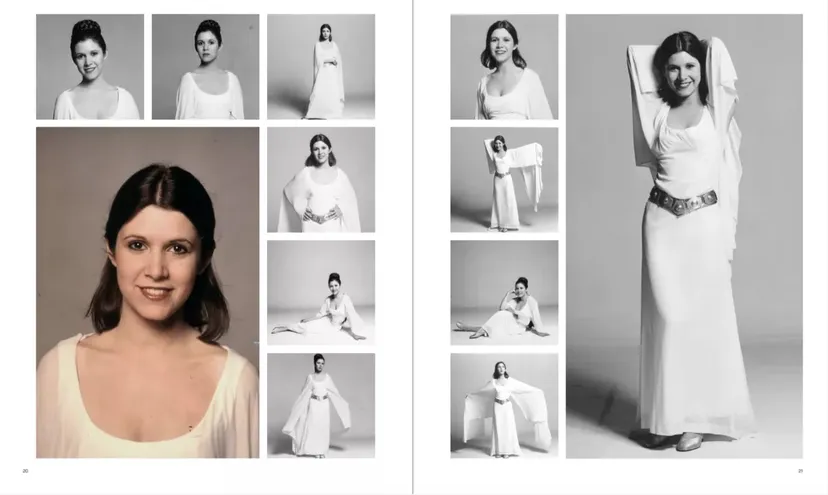

La firma especializada Propstore va a subastar el próximo 28 de junio el vestido de ceremonia de la Princesa Leia, de la película Star Wars: Una Nueva Esperanza (1977). Propstore estima que el vestido de la Princesa Leia podría alcanzar un precio de 1 o 2 millones de dólares, de partida. Se trata del traje ceremonial que la actriz Carrie Fisher lució en la última escena de la película, cuando entrega las medallas a Han Solo y Luke Skywalker... y se olvida del pobre Chewbacca, que se la merecía como el que más. Este vestido de la Principe Leia es muy estimado por varias razones. Primero, porque todos los atrezos originales de Star Wars lo son. Aún más los de la primera película. Y también, porque por desgracia Carrie Fisher falleció en 2016, y ya sabemos que los objetos de personas fallecidas, adquieren más valor.
"El vestido de ceremonia original de la princesa Leia que lució Carrie Fisher es una pieza asombrosa de la historia del cine", explica Brandon Alinger, director de operaciones de Propstore, en una entrevista en Space.com "El vestido se utilizó en la última escena de la película original de Star Wars y, es lo último que se ve en pantalla antes de que aparezcan los créditos", continúa. "La película posicionó a Carrie Fisher como una superestrella mundial. Es increíble que 47 años después de que se rodara la escena, este vestido siga existiendo y siga inspirando a fans de todo el mundo." Este es el vestido en cuestión:
La subasta tendrá lugar en The Petersen Automotive Museum de Los Ángeles, el 28 de junio. Se puede pujar online, o de forma presencial, a través de la web de Propstore. Se subastan más de 1.400 piezas provenientes de películas, desde la máscara de Peter Quills (Chris Pratt) en Guardianes de la Galaxia, al vestido de Rose en Titanic, trajes de gladiador de Gladiator, y mucho más. Debido a la gran cantidad de objetos, la subasta se va a extender a lo largo de tres días. El vestido de la Princesa Leia en Star Wars aspira a recibir las pujas más altas, para superar los 2 millones de dólares.